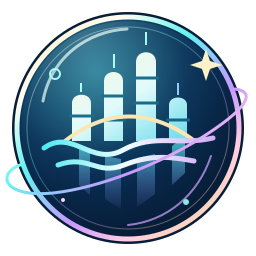

AN OCEAN OF POSSIBILITY
Some cities touch the sky.This one dreams beneath the water.
CLICK ANYWHERE TO BEGIN · HEADPHONES RECOMMENDED
MAKE YOURSELF AT HOME
Lower resolution means fewer pixels. The game still fills your window.